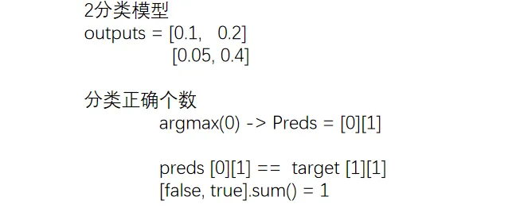
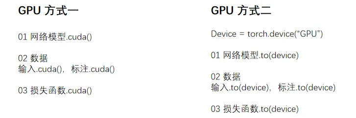

第 04 讲 炼丹流程📝
1.1 模型操作
1.1.1 使用&修改
torchvision.models 有分类、语义分割、目标检测等，本次讲分类模型 VGG
最常用的为 VGG16 和 VGG19，VGG16 的数据集 ImageNet 需安装「scipy」
model_pretrained.py
import torchvision
from torch import nn
# VGG16 对应的 ImageNet数据集 由于数据集过大选择放弃
# train_data = torchvision.datasets.ImageNet("./data_image_net",
# split='train',
# download=True,
# transform=torchvision.transforms.ToTensor())
# 01 使用
vgg16_false = torchvision.models.vgg16(pretrained=False) # 初始参数
vgg16_true = torchvision.models.vgg16(pretrained=True) # 训练好的
print(vgg16_true) ## 查看网络模型架构
train_data = torchvision.datasets.CIFAR10('./data',
train=True,
transform=torchvision.transforms.ToTensor(),
download=True)
# 02 修改方式
# (1) 加线性层
print(vgg16_true)
vgg16_true.classifier.add_module('add_linear', nn.Linear(1000, 10))
print(vgg16_true)
# (2) 直接修改
print(vgg16_false)
vgg16_false.classifier[6] = nn.Linear(4096, 10)
print(vgg16_false)
1.1.2 保存&加载
训练好的模型需要进行保存，以备后续加载使用
model_save.py
import torch
import torchvision
from torch import nn
vgg16 = torchvision.models.vgg16(pretrained=False) ##不要预训练
# 01 保存方式
# (1) 模型参数 + 模型结构
torch.save(vgg16, "vgg16_method1.pth")
# (2) 模型参数（官方推荐）
## .state_dict()是将网络模型保存成Python中字典形式
torch.save(vgg16.state_dict(), "vgg16_method2.pth")
# 02 自定义模型
class Tudui(nn.Module):
def __init__(self):
super(Tudui, self).__init__()
self.conv1 = nn.Conv2d(3, 64, kernel_size=3)
def forward(self, x):
x = self.conv1(x)
return x
tudui = Tudui()
torch.save(tudui, "tudui_method1.pth")
自定义模型保存后加载，记得要 「导入」
model_load.py
import torch
import torchvision
# 01 加载方式
# (1) 加载 模型参数 + 模型结构 torch.load
model = torch.load("vgg16_method1.pth")
print(model)
# (2) 加载 模型参数 (恢复以字典形式保存的模型的结构) .load_state_dict(torch.load())
vgg16 = torchvision.models.vgg16(pretrained=False)
vgg16.load_state_dict(torch.load("vgg16_method2.pth"))
print(vgg16)
# 02 自定义模型 (有加载陷阱)
# 需要复制过来 or 导入
## 方式1. 复制过来 (但是不需要tudui = Tudui())
class Tudui(nn.Module):
def __init__(self):
super(Tudui, self).__init__()
self.conv1 = nn.Conv2d(3, 64, kernel_size=3)
def forward(self, x):
x = self.conv1(x)
return x
## 方式2. 从上面model_save.py文件导入所有类、函数和变量
from model_save import *
model = torch.load('tudui_method1.pth')
print(model)
1.2 模型训练
train.py
import torchvision
from torch.utils.data import DataLoader
from torch.utils.tensorboard import SummaryWriter
from model import * #用下方单独创建的model文件(这样比较规范)
# 01 准备数据集
train_data = torchvision.datasets.CIFAR10(root="./data",
train=True,
transform=torchvision.transforms.ToTensor(),
download=True)
test_data = torchvision.datasets.CIFAR10(root="./data",
train=False,
transform=torchvision.transforms.ToTensor(),
download=True)
# length 查看长度
train_data_size = len(train_data)
test_data_size = len(test_data)
print("训练数据集的长度为：{}".format(train_data_size))
print("测试数据集的长度为：{}".format(test_data_size))
# 02 利用 DataLoader 加载数据集
train_dataloader = DataLoader(train_data, batch_size=64)
test_dataloader = DataLoader(test_data, batch_size=64)
# 03 创建网络模型
tudui = Tudui()
# 04 损失函数
loss_fn = nn.CrossEntropyLoss()
# 05 优化器
learning_rate = 1e-2 # 代表0.01
optimizer = torch.optim.SGD(tudui.parameters(), lr=learning_rate)
# 06 设置训练网络的一些参数
total_train_step = 0 # 记录训练的次数
total_test_step = 0 # 记录测试的次数
epoch = 10 # 训练的轮数
# 添加tensorboard 可视化查看信息
writer = SummaryWriter("logs")
for i in range(epoch):
print("-------第 {} 轮训练开始-------".format(i+1))
"""
仅对一部分网络层有作用， 如Dropout、BatchNorm层
tudui.train() 设置成训练模式（可选）
tudui.eval() 设置成测试模式（可选）
"""
# 07 训练步骤开始
tudui.train()
for data in train_dataloader:
imgs, targets = data
outputs = tudui(imgs)
loss = loss_fn(outputs, targets)
# 优化器 进行一次 优化模型
optimizer.zero_grad() ##先梯度清零
loss.backward()
optimizer.step()
total_train_step = total_train_step + 1
if total_train_step % 100 == 0: ## 满一百打印一次记录
print("训练次数：{}, Loss: {}".format(total_train_step, loss.item()))
## 这里加.item 是让直接输出显示数值(转为标量值int/float),不显示类型
writer.add_scalar("train_loss", loss.item(), total_train_step)
# 08 测试步骤开始 (使用测试集啦)
tudui.eval()
total_test_loss = 0
total_accuracy = 0
with torch.no_grad(): # 因为只需要测试，不需要反传梯度
for data in test_dataloader: ## 使用测试数据集
imgs, targets = data
outputs = tudui(imgs)
loss = loss_fn(outputs, targets)
total_test_loss = total_test_loss + loss.item()
accuracy = (outputs.argmax(1) == targets).sum() # argmax -> 正确个数 argmax(1) ->横向对比
total_accuracy = total_accuracy + accuracy
print("整体测试集上的Loss: {}".format(total_test_loss))
print("整体测试集上的正确率: {}".format(total_accuracy/test_data_size))
writer.add_scalar("test_loss", total_test_loss, total_test_step)
writer.add_scalar("test_accuracy", total_accuracy/test_data_size, total_test_step)
total_test_step = total_test_step + 1
# 保存模型
torch.save(tudui, "tudui_{}.pth".format(i))
##官方保存方式 torch.save(tudui.state_dict(),"tudui_{}.pth".format(i))
##.state_dict()转换为字典型
print("模型已保存")
writer.close()
model.py
import torch
from torch import nn
# 搭建神经网络
class Tudui(nn.Module):
def __init__(self):
super(Tudui, self).__init__()
self.model = nn.Sequential(
nn.Conv2d(3, 32, 5, 1, 2),
nn.MaxPool2d(2),
nn.Conv2d(32, 32, 5, 1, 2),
nn.MaxPool2d(2),
nn.Conv2d(32, 64, 5, 1, 2),
nn.MaxPool2d(2),
nn.Flatten(),
nn.Linear(64*4*4, 64),
nn.Linear(64, 10)
)
def forward(self, x):
x = self.model(x)
return x
# main函数 ()
if __name__ == '__main__':
## 测试网络模型的正确性
tudui = Tudui()
input = torch.ones((64, 3, 32, 32))
output = tudui(input)
print(output.shape)
正确率是分类问题比较特有的指标，计算正确率的方法如下

argmax() 函数.py
import torch
# item()函数
# 从只包含单个元素的张量中提取Python数值，将张量转换为标量值
a = torch.tensor(5)
print(a)
print(a.item())
# argmax()函数
# 0纵向，1横向
outputs = torch.tensor([[0.1,0.2],
[0.05,0.4]])
print(outputs.argmax(0)) # 纵向对比
print(outputs.argmax(1)) # 横向对比
1.3 GPU

train_gpu_1.py
import torch
import torchvision
from torch import nn, cuda
from torch.utils.data import DataLoader
from torch.utils.tensorboard import SummaryWriter
# 01 准备数据集
# ···
# ···
# 03 创建网络模型
"""
使用GPU要做的修改
01 网络模型
02 数据
03 损失函数
"""
tudui = Tudui()
if cuda.is_available():
tudui.cuda() ##将网络模型转移到cuda上
# 04 损失函数
loss_fn = nn.CrossEntropyLoss()
if cuda.is_available():
loss_fn = loss_fn.cuda()
# ···
# ···
# 07 训练步骤开始
for data in train_dataloader:
imgs, targets = data
if cuda.is_available():
imgs = imgs.cuda()
targets = targets.cuda()
# ···
# ···
# 08 测试步骤开始
for data in test_dataloader:
imgs, targets = data
if cuda.is_available():
imgs = imgs.cuda()
targets = targets.cuda()
train_gpu_2.py
import torch
import torchvision
from torch import nn, cuda
from torch.utils.data import DataLoader
from torch.utils.tensorboard import SummaryWriter
"""
单显卡
Torch.device(“cuda”)
Torch.device(“cuda:0”)
多显卡-第2张
Torch.device(“cuda:1”)
"""
# 定义训练的设备
device = torch.device("cuda" if torch.cuda.is_available() else "cpu")
# 01 准备数据集
# ···
# ···
# 03 创建网络模型
"""
使用GPU要做的修改
01 网络模型
02 数据
03 损失函数
"""
tudui = Tudui()
tudui.to(device)
# 04 损失函数
loss_fn = nn.CrossEntropyLoss()
loss_fn.to(device)
# ···
# ···
# 07 训练步骤开始
for data in train_dataloader:
imgs, targets = data
imgs = imgs.to(device)
targets = targets.to(device)
# ···
# ···
# 08 测试步骤开始
for data in test_dataloader:
imgs, targets = data
imgs = imgs.to(device)
targets = targets.to(device)
1.4 验证
本节加载模型，选择导入 model 文件中模型的方式，不再复制代码
test.py
import torch
import torchvision
from PIL import Image
from torch import nn
from model import *
image_path = "./imgs/dog.png"
image = Image.open(image_path)
"""
png格式是RGBA四个通道，需要转为RGB颜色通道
视频可以运行是因为不同截图软件保留的通道数是不一样的
"""
image = image.convert('RGB')
transform = torchvision.transforms.Compose([
torchvision.transforms.Resize((32, 32)),
torchvision.transforms.ToTensor()
])
image = transform(image)
print(image.shape)
# 01 CPU环境
# 先注释,因为不用CPU model = torch.load("tudui_0.pth")
# 02 CPU环境 验证 GPU环境下训练的模型
model = torch.load("tudui_29_gpu.pth",map_location=torch.device('cpu'))
## map_location 对应到相应的设备上(映射)
# 开始验证
image = torch.reshape(image, (1, 3, 32, 32))
model.eval() ## 设置为测试类型(符合规范)
with torch.no_grad():
output = model(image)
print(output)
print(output.argmax(1)) # 横向